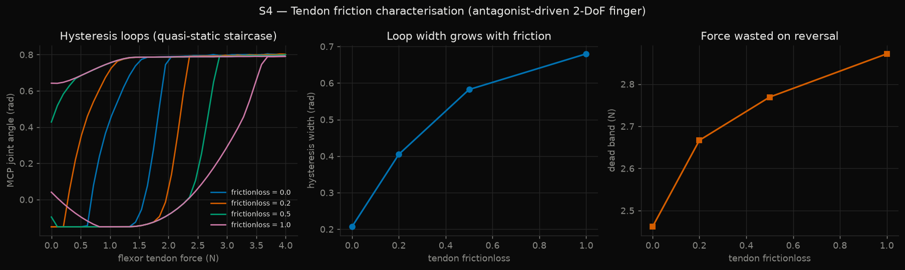
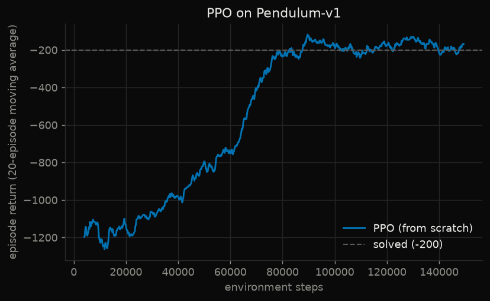
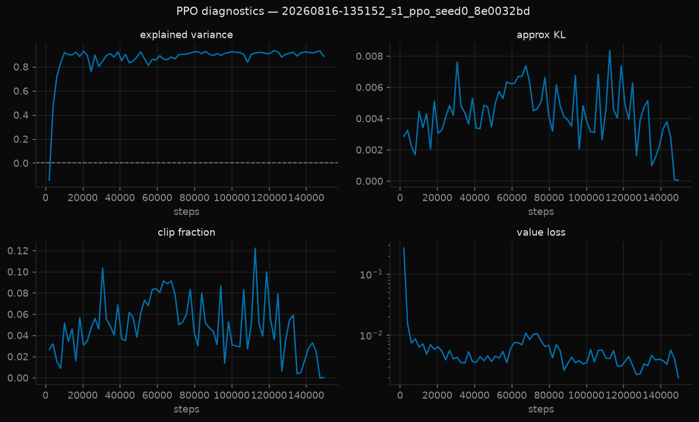
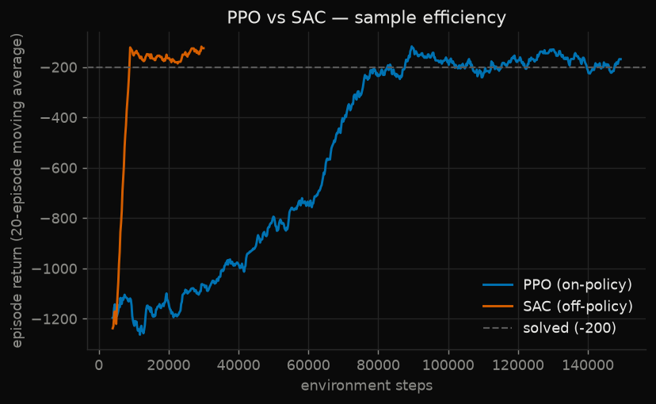
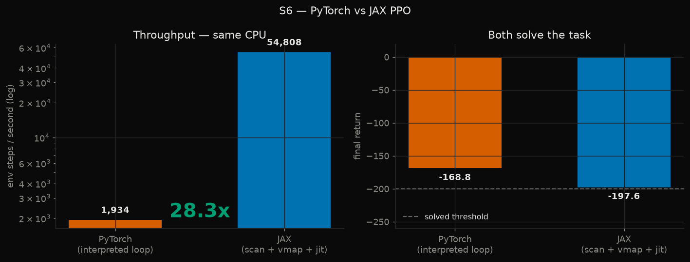

Reinforcement learning, tendon dynamics, and closing the reality gap.
Policy-gradient algorithms written from scratch, musculotendon actuators modeled
in MuJoCo, and a simulator fitted to logged measurements from a physical Franka Panda —
validated on held-out data.
Six projects, each validated against something external
Not against itself. A learning curve that rises proves only that a number went up.
Every result below is measured against a published baseline, an independent implementation, a
physical consistency check, or held-out data the optimizer never saw.
PPO from scratch
Pendulum solved. −1196 → −168.8, past the −200 threshold.
SAC from scratch
9.41× PPO's sample efficiency on identical task and seed.
The DROID dataset logs two independent signals at 15 Hz: what the
controller was commanded, and where the robot actually went. Real joints have friction, rotor
inertia, finite gain, and latency, so a robot never perfectly tracks its command. That gap is
the physical signature a simulator has to reproduce.
Menagerie's Franka Panda posed from real DROID joint measurements — four frames of one episode.
The measurement
0.0431BASELINE RMSE (rad)
0.0187AFTER SYSID (rad)
56.7%HELD-OUT IMPROVEMENT
24 / 8TRAIN / TEST EPISODES
A held-out episode the optimizer never saw, on its worst joint. Fitting and reporting
on the same trajectories is overfitting a simulator — the split is by episode, never by frame.
What was identified
Parameter
Menagerie default
Identified
Ratio
Joint damping
1.000
5.027
5.03×
Armature (rotor inertia)
0.100
0.467
4.67×
Coulomb frictionloss
0.000
3.071
from zero
Command latency
0 frames
3.30 frames
220 ms
Controller gain kp
3142.9
3218.5
1.02×
Why this fit is credible
Four parameters moved substantially. One did not. Controller gain shifted by
2% — Menagerie already had it right, and the optimizer left it alone.
That asymmetry is the evidence. An optimizer that simply drives every parameter to whatever
reduces error would have moved all five. Leaving the already-correct one untouched is what
distinguishes identification from curve-fitting.
The physically interesting findings: Menagerie ships zero dry friction, and
real Coulomb friction is substantial. Rotor inertia was underestimated ~4.7× — harmonic
drives multiply it by the square of the gear ratio, which is why armature is the most
commonly ignored parameter. And 220 ms of latency was entirely unmodeled.
The dataset that had no reality gap
The first attempt used lerobot/nyu_franka_play_dataset. Its action
column turned out to be exactly state[t+1] − state[t] — correlation
1.0000 on every joint, identical standard deviations. The "actions" were
relabeled state deltas. Its end-effector pose was likewise pure forward kinematics of the
joint angles, matching MuJoCo's FK to 0.000 m.
That dataset is self-consistent by construction and contains nothing to identify. Fitting to
it would have produced a near-perfect result that meant nothing — and collapsed the moment
anyone asked what the number represented.
The check is now verify_dataset_has_gap(), which raises rather than producing a
flattering plot.
Tendon Actuators
Where tendon-driven robots get hard
A 2-DoF finger driven by an opposing flexor/extensor pair of spatial tendons
wrapping cylindrical pulleys — the actuation family used in musculotendon androids, rather
than geared joints.
Flexor tension 0 → 1.5 → 2.2 → 4.0 N. Frames two and three look nearly identical,
then the mechanism snaps. That discontinuity is the finding below.Continuous flexor sweep at frictionloss 0.5, with constant extensor co-contraction.

Quasi-static staircase protocol: 40 force levels up and back, settling to static
equilibrium at each. Both metrics increase monotonically with friction.
0.207 rad of hysteresis at zero friction
That should be impossible — with no friction, loading and unloading must coincide. Tracing
individual force levels explains it: the finger snaps between two stable
configurations, jumping up at 2.05 N while loading but not falling back until
1.03 N while releasing.
This is snap-through bistability from under-actuation. The flexor is an extrinsic tendon
spanning both joints — the same arrangement as the long flexors in a human finger — so the
joints cannot be commanded independently.
The two sources matter differently. Friction hysteresis can be reduced with better routing or
compensated with a model. Bistability cannot: it is intrinsic to the kinematics, and a
controller has to plan around it.
Three silent failures
Sign convention needs routing and gear to agree. MuJoCo applies
qfrc = Jᵀ·(gear·ctrl), so positive force acts along increasing tendon
length — it pushes. A real tendon only pulls, requiring gear = −1and
correct site placement. Two attempts each got one half right; the finger crept to the wrong
joint limit while compiling cleanly.
0.25 Hz is not quasi-static. The sinusoidal protocol measured dynamic phase
lag, reporting 0.314 rad at zero friction and hysteresis that decreased as friction
rose — exactly backwards. Fixed with a settling staircase, which is also how the measurement
is made on real hardware.
Wrap geoms were colliding. Routing pulleys are tendon surfaces, not bodies.
Excluding them removed ~18% phantom hysteresis. Found only because MJX refuses cylinder-box
collisions and failed loudly where plain MuJoCo was silent — porting to a second backend
turns out to be an effective model-validation technique.
PPO · From Scratch
Proximal Policy Optimization
~300 lines of PyTorch: GAE(λ), clipped surrogate objective, orthogonal
initialisation, observation normalisation, per-minibatch advantage normalisation. No
stable-baselines3 — the point was to earn the ability to explain each piece.
−168.8FINAL RETURN (FROM −1196)
0.90EXPLAINED VARIANCE
−161.6IQM, 95% CI [−192, −136]
82,800STEPS TO SOLVE

Validated against the published −200 threshold.Trained policy, deterministic. Return −126.3.
The bug that teaches the most
The first implementation did not learn at all — −1196 → −1172 over 20k
steps, with policy entropy frozen at 1.418 → 1.416. Nothing errored, and the loss decreased.
Cause: missing reward scaling. Pendulum returns are ~−1000, making squared
value error ~10⁶ against a policy-gradient loss of ~10⁻². With
loss = pg_loss + 0.5·v_loss the total was ~100% value loss — and
clip_grad_norm_(0.5) then rescaled the entire gradient to norm 0.5,
sending nearly all of it to the critic.
The policy was not broken. It was starved. Adding a running discounted-return scaler moved
explained variance from 0.00 to 0.90 immediately.

The four panels that reveal whether PPO is healthy. Explained variance ≤ 0 means the
critic is no better than predicting the mean — almost always a bug rather than a hard task.
SAC · From Scratch
Why sample efficiency decides hardware
Twin Q critics with Polyak-averaged targets, a squashed Gaussian actor with the tanh
log-probability correction, and automatic entropy temperature tuning.
82,800PPO STEPS TO −200
8,799SAC STEPS TO −200
9.41×SAMPLE EFFICIENCY

Identical task, identical seed. The comparison is the deliverable.SAC policy, deterministic. Return −126.6.
That ~10× gap is the basis for a real engineering decision. On physical hardware, environment
steps cost wall-clock time and actuator wear, so SAC's efficiency usually wins. In a massively
parallel simulator, PPO's throughput usually wins.
The correction that fails silently
Squashing a Gaussian through tanh is a nonlinear change of variables, so the
density needs the log-determinant of the Jacobian:
log_prob −= log(1 − tanh(u)² + ε).
Omit it and nothing crashes. The algorithm simply maximises the entropy of a distribution it
is not executing, and with automatic temperature tuning the learned α then
chases a target that does not correspond to real exploration.
JAX · Throughput
Same algorithm, different program shape
The PyTorch implementation is a loop with the Python interpreter in the hot path.
The JAX version is a lax.scan over 512 vectorised environments with the entire
update compiled into one jited function. Nothing in the inner loop is interpreted.

28.3× on the same CPU, with both implementations solving the task. No GPU is
involved — this isolates the benefit of program shape from hardware.
1,934PYTORCH STEPS/S
54,808JAX STEPS/S
28.3×SPEEDUP, SAME CPU
1.2 sJIT COMPILE (ONE-OFF)
The port reproduced the PyTorch bug exactly
The first JAX version did not learn: flat at ~−1200 while running at 196k steps/s. Identical
symptom, identical cause — no reward scaling.
That the same bug appeared independently in a completely different framework is itself
evidence the two implementations agree. Writing the algorithm twice is a correctness check
that no amount of re-reading one implementation provides.
A second bug was specific to the vectorised setting. Pendulum has no terminal state — every
episode end is a truncation, so the value must always be bootstrapped. But in a JAX rollout the
environment autoresets inside the scan, so values[t+1] on a truncated step
belongs to a different trajectory. The fix captures the true next state's value before reset:
nv = jnp.where(trunc, boot, next_value) # bootstrap the real continuation
delta = reward + gamma * nv - value_t
gae = jnp.where(trunc, delta, gae) # accumulator still resets
The accumulator reset and the value bootstrap are two separate decisions. Conflating them is
the standard form of this bug.
Infrastructure
Three questions, one interface
Design metrics and benchmarks to evaluate policies in open loop, in simulation, and on
the real robot — so progress is measurable at every stage.
Those are three different questions, and conflating them is how sim-to-real projects fool
themselves. All three share one interface and one log schema, so a simulation number and a
hardware number are directly comparable.
Reproducibility
Every run writes one JSONL file whose first line is a manifest — seed, config, git SHA,
library versions, and a hash of the compiled MuJoCo model.
Hashing the compiled model catches edits the XML alone would hide, so a plot can always be
tied to the exact physics that produced it.
Metrics are pure functions of the log, never computed inline during training — a metric can
be redefined and every historical run re-evaluated without retraining.
Results report the interquartile mean with bootstrap confidence intervals rather than
mean ± std over three seeds, following Agarwal et al.,
Deep RL at the Edge of the Statistical Precipice.
Each command writes a timestamped run directory under runs/ containing the full
JSONL log and any checkpoints. No GPU is required for any result on this page.